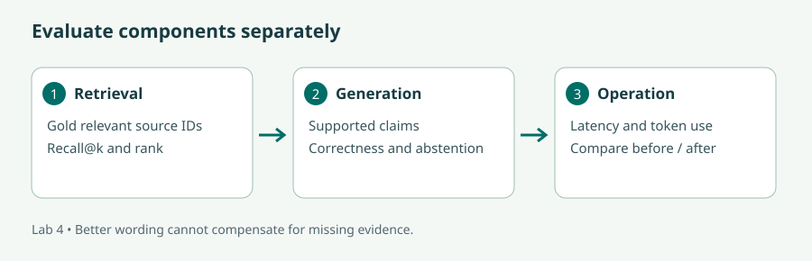

Put your skills into a project
Choose a practical problem, reuse what you have learned, and build something you can demonstrate and evaluate.
Choose something useful to build
These projects turn the course skills into small portfolio applications. Pick one that matches the modules you have completed; you do not need to build all six. Time estimates are planning guides and exclude environment setup and long training runs. This module is optional and does not affect completion of the six core modules. None of the projects requires Flowise.
By completing a project, you will practise defining an input/output contract, reusing course components, evaluating on unseen examples, and explaining limitations. Begin with the smallest working version, keep a baseline, and add an extension only after the baseline behaves as expected.
| Project | Level / suggested effort | Modules to complete first |
|---|---|---|
| 1. Study-card maker | Foundation · 2–4 hours | 1 · LLM applications, 2 · Interfaces |
| 2. Course feedback explorer | Foundation → intermediate · 4–6 hours | 2 · Interfaces; 5 · Fine-tuning for the optional extension |
| 3. Document evidence desk | Intermediate · 6–10 hours | 1, 2, 4 · RAG |
| 4. Reusable explainer workflow | Intermediate · 4–6 hours | 1, 3 · LangChain and Langflow |
| 5. Support-ticket classifier | Intermediate → advanced · 1–2 days | 2, 5 · Fine-tuning |
| 6. Bounded learner-support assistant | Advanced capstone · 1–2 days | 1, 2, 4, 6 · Agents |
A repeatable project method
- Define the task. Write who uses the app, what they supply, and what useful output looks like. Choose an explicit out-of-scope request.
- Make practice data. Use the fictional course files in the lab archive or write your own synthetic examples. Keep answers and expected labels separately from inputs.
- Build a baseline. Run a function in the terminal before adding the UI. Reuse the linked lab files in a new project folder; preserve the original lab examples.
- Keep evaluation honest. Use development cases to improve the app, then evaluate on new cases. Record errors, elapsed time, and usage rather than reporting only the best example.
- Explain the result. Save setup instructions, screenshots, an evaluation table, and a short account of what still fails.
A CPU is enough for the interface, routing, and small retrieval projects. Package/model downloads need internet; hosted model calls need your configured credentials and can incur charges. Project 5 benefits from GPU access. Reuse the relevant module's environment instructions rather than installing every framework into one environment.

Study-card maker
Build: a Gradio app that turns a short passage into three question-and-answer cards for revision. A learner chooses the audience and can inspect the original passage beside the cards.
Relevant modules: Module 1: provider calls and prompt contracts supplies generation; Module 2: components and events supplies input controls and feedback. Add Module 3: composition only if you want a reusable chain.
Start from: providers.py and app.py. Replace the document-query function with your card-generation function; keep input validation.
- Write five short teaching passages and a small answer guide. For example: “A Python dictionary maps keys to values. Keys are unique.” A valid card asks what a dictionary maps and answers “keys to values”.
- Prompt the model to produce exactly three cards using only the passage. If there is insufficient content, ask it to return fewer cards with an explanation.
- Add a passage textbox, audience dropdown, Generate button, and visible output. Reject blank input and put a documented length limit on passages.
- Try five new passages, including one with too little information. Count unsupported answers, duplicate cards, and formatting failures.
Done when: the app runs, all displayed answers can be traced to the passage, and your report includes at least one limitation. Target zero unsupported answers in your small test set; report any misses instead of hiding them. Stretch: let the learner edit a card before exporting it as text.
Stuck? Reference approach
Use a prompt with separate instruction and passage fields: “Create up to three distinct study cards from the passage. Do not add outside facts. For each, return Question and Answer.” Display plain text first; add structured parsing later. If answers invent facts, inspect the actual prompt and remove examples that introduce unrelated subject matter. Revisit Module 1's provider solution and Module 2's event wiring.
Course feedback explorer
Build: a Streamlit dashboard that classifies practice course reviews, shows which need human review, and lets the user compare thresholds.
Relevant modules: Module 2: shared model backend and session state cover the core project. Module 5: classification evaluation helps interpret errors; its training lab is an optional extension.
Start from: backend.py and streamlit_app.py. The supplied tiny model is an interface baseline, not a reliable judge of real learners.
- Create a CSV with
review_id,text,expected_labeland 20 synthetic reviews. Include positive, negative, and mixed/ambiguous examples; treat ambiguous cases as requiring human review. - Read the file, validate the columns, and call the shared prediction function for each text. Keep the expected labels out of model inputs.
- Display a table with review text, prediction, and human-review status. Add a threshold control and a count of escalated reviews.
- Compare thresholds 0.5 and 0.95 on the same reviews. Report prediction mistakes and the number sent for review separately.
Example: “Clear examples, but the pace was too fast” is deliberately mixed. The useful outcome is visible uncertainty and review, not forced confidence. Done when: the table contains every input exactly once, threshold changes update results, and a fresh session does not inherit another user's review decisions. Stretch: fine-tune using Module 5, then compare on a separate target-domain test set.
Stuck? Reference approach
Separate load_data, classify_review, and display code. Keep model loading cached and user annotations in session state. Do not reinterpret the model score as a calibrated probability. Use the Streamlit solution for reruns and the worked metric example for evaluation.
Document evidence desk
Build: a question-answering app for a small set of fictional course policies. It must show retrieved evidence and decline questions the documents cannot answer.
Relevant modules: Module 1: document loading and query engines, Module 2: interface design, and Module 4: retrieval and answer evaluation. Module 3: private-data connections is useful for a workflow-service extension.
Start from: rag.py, private_qa.py, and the four fictional policy files in the archive.
- Read the policies and write eight answerable questions with gold source IDs, plus four unanswerable questions.
- Run retrieval without generation. Compare k=1 and k=2 using the same questions and count whether the gold source appears.
- Add generation and a UI that shows both the answer and the retrieved text. Label retrieved sources separately from verified claim support.
- Change one practice policy, rebuild the index, and check that new answers use the revised text. Then restore the course fixture.
- Evaluate on new paraphrases and questions about missing information. Record citation support and correct abstention.
Example: “When can I request a refund?” should use the deadline in refund.txt. “Is accommodation included?” should state that the supplied evidence does not say. Done when: every factual answer has inspectable evidence and the report separates retrieval failures from generation failures. Stretch: add version metadata to distinguish current and superseded policies.
Stuck? Reference approach
Inspect source filenames and passages before changing the generator prompt. If the passage is wrong, repair retrieval; if it is right but the answer contradicts it, repair generation. A useful first output is just the retrieved passage, which provides a baseline against which to judge generated prose. See the grounded-answer solution and the evaluation table guidance.
Reusable explainer workflow
Build: the same topic-explanation service in Python and Langflow, then call the restored visual workflow from a Python client.
Relevant modules: Module 1: the first chain and Module 3: composition, export, and API execution. Module 2 supplies an optional user interface. Flowise is an optional comparison only.
Start from: chain.py and call_flow.py.
- Define the contract: topic and audience in, three short explanatory bullets out. Reject an empty topic.
- Make the Python chain work on three topics. Record its model ID and prompt.
- Build the equivalent Langflow graph and use the same model and instructions. Compare whether each output meets the contract, rather than demanding identical sentences.
- Export a secret-free flow, restore it, reconnect credentials, and call the restored ID through the supplied client.
- Stop the runtime and observe the client's failure. Document how a user would learn that the service is unavailable.
Done when: another learner can restore the export and run the client using your README and their own credentials. Include one success and one failure case. Stretch: add a bounded retry for a transient request failure and explain why a malformed input should not be retried.
Stuck? Reference approach
Use input → prompt → model → output in Langflow. Exported JSON is configuration for a runtime, not standalone Python. Most round-trip failures can be localized to missing credentials, a changed flow ID, incompatible nodes, or a request-body mismatch. See the connection diagram and the HTTP request solution.
Support-ticket classifier
Build: a classifier that suggests a category for a fictional course-support ticket: refund, schedule, technical setup, or accessibility. A human reviews the suggestion.
Relevant modules: Module 5: data preparation, training controls, and evaluation; Module 2: model/UI separation. Add Module 6 only for an optional routing workflow.
Start from: train_sentiment.py. Adapt its dataset loading, label mappings, and number of labels to this four-class task; do not merely rename a sentiment model's outputs.
- Write a label guide and about 25 synthetic tickets per category. Mark multi-intent or ambiguous tickets for separate human-review testing.
- Group paraphrases from the same seed ticket together before splitting into training, validation, and test sets. Keep a written record of the split.
- Establish a majority-class and simple keyword baseline. Fine-tune the encoder using the new label mapping.
- Compare two learning rates on validation macro-F1. Choose settings before inspecting final test results.
- Show predicted category in a UI. Add an explicit review path for ambiguous cases and inspect errors by class.
Example: “My Python installation fails” maps to technical setup; “Can I change the date and still get my fee back?” needs review for multiple intents. Done when: the report contains baselines, a held-out confusion matrix, per-class errors, and a limitation statement about the small synthetic dataset. Improvement over baseline is an experimental question, not a guaranteed outcome. Stretch: evaluate on independently written tickets to investigate domain shift.
Stuck? Reference approach
Use four integer labels with a consistent id2label/label2id mapping in training and inference. Set the classification head to four outputs. Do not allow sibling paraphrases into different splits. If the model predicts one class for everything, inspect label counts and preprocessing before increasing epochs. Revisit split handling and metric calculations.
Bounded learner-support assistant
Build: an assistant that interprets a course question, selects an allowed read-only tool, checks returned evidence, and displays the answer with an execution trace.
Relevant modules: Module 1: model calls, Module 2: UI and state, Module 4: evidence retrieval, and Module 6: agent contracts and budgets. Module 3 can help package a tool workflow; Module 5 is optional if you reuse Project 5's intent classifier.
Start from: agent.py and retrieval.py. First run the deterministic agent; introduce a model-based router only after the tool contract works.
- Write the goal, states, allowed tools, maximum steps, and stop reasons. Use fictional files and read-only actions.
- Provide two tools: exact policy lookup by allowed topic and search over the fictional corpus. Each returns source IDs and text.
- Route a question to one tool, validate its arguments, and record the returned observation. Keep executable code separate from generated text.
- Check source IDs and evidence before returning an answer. Stop explicitly for unknown topics, missing sources, or an exhausted budget.
- Add a UI with separate answer and trace outputs. Test supported questions, paraphrases, unknown topics, malformed proposals, unavailable files, and a one-step budget.
Done when: no unvalidated proposal executes, every run stops within its budget, and the evaluation table records failures as well as successful answers. A missing source must not produce a fabricated policy. Stretch: add a separate reviewer role with at most one revision, or run Module 6's response-style bandit as a clearly labelled simulation.
Stuck? Reference approach
Keep an explicit state dictionary and a bounded loop. Validate tool names against a fixed mapping and arguments against each tool's contract. Return the exact evidence passage before attempting a generated paraphrase. Log decisions and observations, not hidden reasoning. See expected traces, reviewer checks, and controlled tool failures.
Package and review your project
Submit a runnable app or script, setup instructions, a small practice dataset, an evaluation table, two screenshots (one normal case and one failure case), and a short reflection. Include the modules you reused and explain what each contributed. Keep credentials and local environments out of the submission.
| Review question | Evidence to include |
|---|---|
| Can another learner run it? | Entrypoint, dependencies, configuration placeholders, and startup command |
| Does it solve the stated task? | Representative inputs, expected outcomes, and actual results |
| What happens outside the happy path? | Blank input, unsupported request, or simulated dependency failure |
| Is the evaluation credible? | A baseline, separate development/test cases, and honest error reporting |
| What did you learn? | Module-to-component mapping, one design tradeoff, and a justified next improvement |
This is a self-directed practice module, not a certification assessment. You can finish one project, improve it later, or return to the core labs for more guidance.
Module summary
Start with a small contract, reuse the course's working components, and evaluate the result on examples you did not use to develop it. The projects progress from generation and interfaces through reusable workflows, evidence retrieval, model adaptation, and controlled agents. A useful portfolio shows what works, where it fails, and how the relevant modules helped you build it.